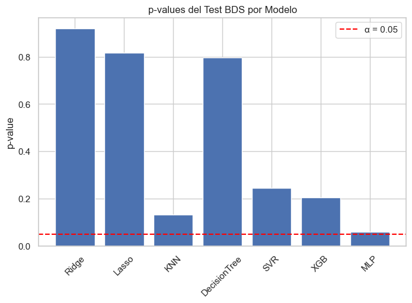
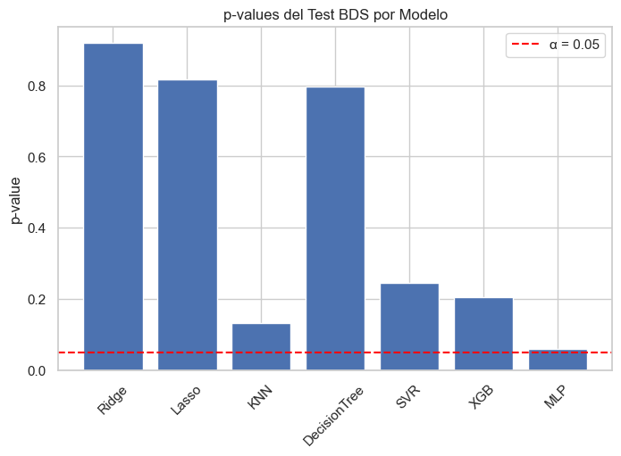

Tendencias Salariales en Empleos de Ciencia de Datos, AI y ML (2025)#
Autores: Laura Cardona Ahumada, Elian Martinez Orozco, Evelyn Mondul y Luis Pino Perez
Fecha: agosto 2025
Introducción#
Esta base de datos presenta información actualizada sobre salarios globales en 2025 para profesionales de Ciencia de Datos, Aprendizaje Automático e Inteligencia Artificial. Fue construida a partir de fuentes públicas como AIJobs, 365DataScience, Payscale, KDnuggets y ZipRecruiter, y está orientada a apoyar análisis de mercado, modelos predictivos, visualizaciones interactivas y estudios sobre trabajo remoto.
El conjunto de datos fue obtenido desde Kaggle, a partir del recurso publicado por el usuario adilshamim8 bajo el título “Salaries for Data Science Jobs”: https://www.kaggle.com/datasets/adilshamim8/salaries-for-data-science-jobs?resource=download. Su contenido resulta útil para investigadores, profesionales del sector, estudiantes y reclutadores que buscan entender las dinámicas actuales de compensación en el ámbito tecnológico.
Objetivo#
El presente análisis tiene como objetivo desarrollar un modelo de aprendizaje automático capaz de predecir el rango salarial de empleos relacionados con Ciencia de Datos, Inteligencia Artificial y Aprendizaje Automático, a partir de información sobre características laborales y profesionales.
Además, se realizará un análisis exploratorio detallado de los datos para identificar patrones, desigualdades y factores determinantes del salario en estas áreas tecnológicas emergentes.
En este notebook se encuentran las siguientes sesiones:
Importaciones y configuración inicial
Carga de datos y selección de columnas
Análisis exploratorio de datos - EDA
Split Train / Validation / Test
Preprocesamiento
Modelos y búsqueda de hiperparámetros
Funciones auxiliares
Loop para evaluar modelos + gráficas + BDS
DataFrame de resultados y gráfico comparativo
1. Importaciones y configuración inicial#
Aquí cargamos todas las librerías necesarias:
Sklearn → para modelos, pipelines, métricas y validación cruzada.
XGBoost y MLP → modelos más avanzados.
statsmodels.tsa.stattools → para el BDS test en los residuos.
Matplotlib / PrettyTable → para gráficos y tablas estructuradas.
import numpy as np
import pandas as pd
import matplotlib.pyplot as plt
import seaborn as sns
from sklearn.compose import ColumnTransformer
from sklearn.pipeline import Pipeline
from sklearn.preprocessing import OneHotEncoder, MaxAbsScaler
from sklearn.impute import SimpleImputer
from sklearn.linear_model import Ridge, Lasso
from sklearn.neighbors import KNeighborsRegressor
from sklearn.tree import DecisionTreeRegressor
from sklearn.svm import SVR
from sklearn.neural_network import MLPRegressor
from sklearn.model_selection import GridSearchCV, RandomizedSearchCV, train_test_split
from sklearn.metrics import mean_absolute_error, mean_squared_error, mean_absolute_percentage_error
from xgboost import XGBRegressor
from scipy.stats import randint, uniform
from statsmodels.tsa.stattools import bds
from prettytable import PrettyTable
2. Carga de datos y selección de columnas#
Leemos el archivo salaries.csv.
Definimos variables categóricas (ejemplo: job_title, company_size) y numéricas (ejemplo: salario, work_year).
Construimos X_full (features) y y_full_price (target → salary_in_usd).
Aquí limpiamos y organizamos el dataset.
DATA_PATH = r"C:\Users\LUIS PINO\Documents\Machine_learning\Proyecto_final\salaries.csv"
defg= pd.read_csv(DATA_PATH)
df = defg[defg['work_year'] == 2025]
categorical_features = ['experience_level','employment_type','job_title','salary_currency','employee_residence','company_location','company_size']
numeric_features = ['salary','salary_in_usd','remote_ratio']
categorical_features = [c for c in categorical_features if c in df.columns]
numeric_features = [c for c in numeric_features if c in df.columns]
X_full = df[categorical_features + numeric_features].copy()
y_full_price = df['salary_in_usd'].copy()
3. Análisis exploratorio de datos - EDA#
sns.set(style='whitegrid', palette='Set2')
plt.rcParams['figure.figsize'] = (10, 6)
# Mostrar las primeras filas
df.head()
| work_year | experience_level | employment_type | job_title | salary | salary_currency | salary_in_usd | employee_residence | remote_ratio | company_location | company_size | |
|---|---|---|---|---|---|---|---|---|---|---|---|
| 0 | 2025 | EX | FT | Head of Data | 348516 | USD | 348516 | US | 0 | US | M |
| 1 | 2025 | EX | FT | Head of Data | 232344 | USD | 232344 | US | 0 | US | M |
| 2 | 2025 | SE | FT | Data Scientist | 145400 | USD | 145400 | US | 0 | US | M |
| 3 | 2025 | SE | FT | Data Scientist | 81600 | USD | 81600 | US | 0 | US | M |
| 4 | 2025 | MI | FT | Engineer | 160000 | USD | 160000 | US | 100 | US | M |
Dataset#
# Dimensiones
print(f"Filas: {df.shape[0]}, Columnas: {df.shape[1]}")
# Tipos de datos
print(df.dtypes)
# Información general
print(df.info())
# Estadísticas descriptivas
print(df.describe(include='all'))
# duplicadas
print("\nFilas duplicadas:", df.duplicated().sum())
Filas: 78726, Columnas: 11
work_year int64
experience_level object
employment_type object
job_title object
salary int64
salary_currency object
salary_in_usd int64
employee_residence object
remote_ratio int64
company_location object
company_size object
dtype: object
<class 'pandas.core.frame.DataFrame'>
Index: 78726 entries, 0 to 78850
Data columns (total 11 columns):
# Column Non-Null Count Dtype
--- ------ -------------- -----
0 work_year 78726 non-null int64
1 experience_level 78726 non-null object
2 employment_type 78726 non-null object
3 job_title 78726 non-null object
4 salary 78726 non-null int64
5 salary_currency 78726 non-null object
6 salary_in_usd 78726 non-null int64
7 employee_residence 78726 non-null object
8 remote_ratio 78726 non-null int64
9 company_location 78726 non-null object
10 company_size 78726 non-null object
dtypes: int64(4), object(7)
memory usage: 7.2+ MB
None
work_year experience_level employment_type job_title \
count 78726.0 78726 78726 78726
unique NaN 4 3 316
top NaN SE FT Software Engineer
freq NaN 44827 78163 9191
mean 2025.0 NaN NaN NaN
std 0.0 NaN NaN NaN
min 2025.0 NaN NaN NaN
25% 2025.0 NaN NaN NaN
50% 2025.0 NaN NaN NaN
75% 2025.0 NaN NaN NaN
max 2025.0 NaN NaN NaN
salary salary_currency salary_in_usd employee_residence \
count 7.872600e+04 78726 78726.000000 78726
unique NaN 18 NaN 74
top NaN USD NaN US
freq NaN 74162 NaN 69914
mean 1.629982e+05 NaN 157018.982585 NaN
std 2.206844e+05 NaN 75599.012724 NaN
min 1.440000e+04 NaN 15157.000000 NaN
25% 1.050000e+05 NaN 104885.250000 NaN
50% 1.460000e+05 NaN 145100.000000 NaN
75% 1.975000e+05 NaN 197000.000000 NaN
max 3.000000e+07 NaN 800000.000000 NaN
remote_ratio company_location company_size
count 78726.000000 78726 78726
unique NaN 73 3
top NaN US M
freq NaN 69920 77189
mean 20.316033 NaN NaN
std 40.219553 NaN NaN
min 0.000000 NaN NaN
25% 0.000000 NaN NaN
50% 0.000000 NaN NaN
75% 0.000000 NaN NaN
max 100.000000 NaN NaN
Filas duplicadas: 40444
Variables#
df.info()
<class 'pandas.core.frame.DataFrame'>
Index: 78726 entries, 0 to 78850
Data columns (total 11 columns):
# Column Non-Null Count Dtype
--- ------ -------------- -----
0 work_year 78726 non-null int64
1 experience_level 78726 non-null object
2 employment_type 78726 non-null object
3 job_title 78726 non-null object
4 salary 78726 non-null int64
5 salary_currency 78726 non-null object
6 salary_in_usd 78726 non-null int64
7 employee_residence 78726 non-null object
8 remote_ratio 78726 non-null int64
9 company_location 78726 non-null object
10 company_size 78726 non-null object
dtypes: int64(4), object(7)
memory usage: 7.2+ MB
df.describe()
| work_year | salary | salary_in_usd | remote_ratio | |
|---|---|---|---|---|
| count | 78726.0 | 7.872600e+04 | 78726.000000 | 78726.000000 |
| mean | 2025.0 | 1.629982e+05 | 157018.982585 | 20.316033 |
| std | 0.0 | 2.206844e+05 | 75599.012724 | 40.219553 |
| min | 2025.0 | 1.440000e+04 | 15157.000000 | 0.000000 |
| 25% | 2025.0 | 1.050000e+05 | 104885.250000 | 0.000000 |
| 50% | 2025.0 | 1.460000e+05 | 145100.000000 | 0.000000 |
| 75% | 2025.0 | 1.975000e+05 | 197000.000000 | 0.000000 |
| max | 2025.0 | 3.000000e+07 | 800000.000000 | 100.000000 |
El 93% de los datos corresponden a 2024–2025. Los salarios típicos en USD se ubican entre 105,000 y 198,000, aunque existen outliers muy altos (hasta 800,000). La mitad de los empleos son presenciales, con una proporción menor en teletrabajo total.
Distribución de variables numéricas#
sns.set(style="whitegrid")
numerical_cols = df.select_dtypes(include=np.number).columns
n = len(numerical_cols)
# Calcular filas y columnas automáticamente
cols = 3
rows = (n // cols) + (n % cols > 0)
fig, axes = plt.subplots(rows, cols, figsize=(15, rows * 3))
axes = axes.flatten()
for i, col in enumerate(numerical_cols):
sns.histplot(df[col], kde=True, bins=20, color='#4C72B0', ax=axes[i])
axes[i].axvline(df[col].median(), color='crimson', linestyle='--', linewidth=1)
axes[i].axvline(df[col].mean(), color='darkgreen', linestyle='--', linewidth=1)
axes[i].set_title(f"{col}", fontsize=11, fontweight="bold")
# Eliminar ejes vacíos
for j in range(i+1, len(axes)):
fig.delaxes(axes[j])
plt.tight_layout()
plt.show()
Distribución de variables categóricas#
sns.set_style("whitegrid")
palette_cat = sns.color_palette("Set2")
# Función auxiliar: Top N
def plot_top_categories(df, col, top_n=15, ax=None):
"""
Grafica un countplot con las Top N categorías más frecuentes.
"""
top_values = df[col].value_counts().nlargest(top_n).index
data = df[df[col].isin(top_values)]
ax = sns.countplot(
data=data,
x=col,
order=data[col].value_counts().index,
palette=palette_cat,
edgecolor='gray',
ax=ax
)
ax.set_title(f'{col} (Top {top_n})', fontsize=12, fontweight='bold', color='darkblue')
ax.set_xlabel("")
ax.set_ylabel("Frecuencia", fontsize=10)
ax.tick_params(axis='x', rotation=30, labelsize=9)
# Etiquetas en las barras
for bar in ax.patches:
height = bar.get_height()
if height > 0:
ax.annotate(f'{height}',
(bar.get_x() + bar.get_width()/2, height),
ha='center', va='bottom', fontsize=8,
color='black', xytext=(0, 3),
textcoords='offset points')
return ax
# Gráficas categóricas
categorical_cols = df.select_dtypes(include='object').columns
# Ajustes para columnas específicas
special_top = {
"job_title": 20,
"employee_residence": 15,
"company_location": 15
}
# Excluir salary_currency (lo graficamos como pastel)
categorical_cols = [c for c in categorical_cols if c != "salary_currency"]
n = len(categorical_cols)
cols = 2
rows = (n // cols) + (n % cols > 0)
fig, axes = plt.subplots(rows, cols, figsize=(14, rows * 4))
axes = axes.flatten()
for i, col in enumerate(categorical_cols):
top_n = special_top.get(col, 15) # por defecto Top 15
plot_top_categories(df, col, top_n=top_n, ax=axes[i])
# Eliminar ejes sobrantes
for j in range(i+1, len(axes)):
fig.delaxes(axes[j])
plt.tight_layout()
plt.show()
# Gráfico de Salary Currency
currency_counts = df["salary_currency"].value_counts()
plt.figure(figsize=(6,6))
plt.pie(currency_counts.values, labels=currency_counts.index,
autopct='%1.1f%%', colors=sns.color_palette("Set3"), startangle=90)
plt.title("Distribución de Salary Currency", fontsize=13, fontweight="bold", color="darkblue")
plt.show()
C:\Users\LUIS PINO\AppData\Local\Temp\ipykernel_39504\2877972932.py:12: FutureWarning:
Passing `palette` without assigning `hue` is deprecated and will be removed in v0.14.0. Assign the `x` variable to `hue` and set `legend=False` for the same effect.
ax = sns.countplot(
C:\Users\LUIS PINO\AppData\Local\Temp\ipykernel_39504\2877972932.py:12: UserWarning: The palette list has more values (8) than needed (4), which may not be intended.
ax = sns.countplot(
C:\Users\LUIS PINO\AppData\Local\Temp\ipykernel_39504\2877972932.py:12: FutureWarning:
Passing `palette` without assigning `hue` is deprecated and will be removed in v0.14.0. Assign the `x` variable to `hue` and set `legend=False` for the same effect.
ax = sns.countplot(
C:\Users\LUIS PINO\AppData\Local\Temp\ipykernel_39504\2877972932.py:12: UserWarning: The palette list has more values (8) than needed (3), which may not be intended.
ax = sns.countplot(
C:\Users\LUIS PINO\AppData\Local\Temp\ipykernel_39504\2877972932.py:12: FutureWarning:
Passing `palette` without assigning `hue` is deprecated and will be removed in v0.14.0. Assign the `x` variable to `hue` and set `legend=False` for the same effect.
ax = sns.countplot(
C:\Users\LUIS PINO\AppData\Local\Temp\ipykernel_39504\2877972932.py:12: UserWarning:
The palette list has fewer values (8) than needed (20) and will cycle, which may produce an uninterpretable plot.
ax = sns.countplot(
C:\Users\LUIS PINO\AppData\Local\Temp\ipykernel_39504\2877972932.py:12: FutureWarning:
Passing `palette` without assigning `hue` is deprecated and will be removed in v0.14.0. Assign the `x` variable to `hue` and set `legend=False` for the same effect.
ax = sns.countplot(
C:\Users\LUIS PINO\AppData\Local\Temp\ipykernel_39504\2877972932.py:12: UserWarning:
The palette list has fewer values (8) than needed (15) and will cycle, which may produce an uninterpretable plot.
ax = sns.countplot(
C:\Users\LUIS PINO\AppData\Local\Temp\ipykernel_39504\2877972932.py:12: FutureWarning:
Passing `palette` without assigning `hue` is deprecated and will be removed in v0.14.0. Assign the `x` variable to `hue` and set `legend=False` for the same effect.
ax = sns.countplot(
C:\Users\LUIS PINO\AppData\Local\Temp\ipykernel_39504\2877972932.py:12: UserWarning:
The palette list has fewer values (8) than needed (15) and will cycle, which may produce an uninterpretable plot.
ax = sns.countplot(
C:\Users\LUIS PINO\AppData\Local\Temp\ipykernel_39504\2877972932.py:12: FutureWarning:
Passing `palette` without assigning `hue` is deprecated and will be removed in v0.14.0. Assign the `x` variable to `hue` and set `legend=False` for the same effect.
ax = sns.countplot(
C:\Users\LUIS PINO\AppData\Local\Temp\ipykernel_39504\2877972932.py:12: UserWarning: The palette list has more values (8) than needed (3), which may not be intended.
ax = sns.countplot(

Tasa anual de contratación de profesionales en ciencia de datos#
df['work_year'].value_counts()
work_year
2025 78726
Name: count, dtype: int64
Impacto del nivel de experiencia en las oportunidades de empleo cada año#
df.groupby('work_year')['experience_level'].value_counts()
work_year experience_level
2025 SE 44827
MI 24400
EN 6828
EX 2671
Name: count, dtype: int64
df_counts = df.groupby('work_year')['experience_level'].value_counts().unstack(fill_value=0)
df_props = df_counts.div(df_counts.sum(axis=1), axis=0)
df_props.plot(kind='bar', stacked=True, figsize=(6,4))
plt.xlabel('Years')
plt.ylabel('Work Experience')
plt.title('Work Experience by Years')
plt.show()
Se puede evidenciar que el mercado de Ciencia de Datos favorece perfiles Senior y Mid-level, pero sigue abriendo espacio para entry-level, aunque en menor medida.
Cambio de salarios a lo largo del tiemp#
df.groupby('work_year')['salary_in_usd'].mean()
work_year
2025 157018.982585
Name: salary_in_usd, dtype: float64
Después de una ligera caída en 2021, los salarios han mostrado una tendencia creciente hasta 2024, con una leve disminución en 2025.
Distribución salarial según el nivel de experiencia#
df.groupby('experience_level')['salary_in_usd'].mean()
experience_level
EN 96141.221002
EX 201188.182329
MI 141753.112295
SE 171969.451246
Name: salary_in_usd, dtype: float64
df.boxplot(column='salary_in_usd', by='experience_level', figsize=(5,3))
plt.title('Salary Distribution by Experience Level')
plt.suptitle('')
plt.xlabel('Experience Level')
plt.ylabel('Salaries in USD')
plt.show()
Los resultados muestran que el nivel de experiencia tiene un impacto claro en los salarios promedio.
Salarios según el tipo de empleo#
df.groupby('employment_type')['salary_in_usd'].mean()
employment_type
CT 102683.996855
FT 157494.825736
PT 75734.073469
Name: salary_in_usd, dtype: float64
df.boxplot(column='salary_in_usd', by='employment_type', figsize=(5,3))
plt.title('Salary Distribution by Employment type')
plt.suptitle('')
plt.xlabel('Employment type')
plt.ylabel('Salaries in USD')
plt.show()
Se puede observar que los profesionales a tiempo completo son quienes reciben los salarios más altos en promedio, mientras que los freelancers y los de medio tiempo ganan bastante menos.
Títulos de trabajo con los salarios promedios más altos#
df.groupby('job_title')['salary_in_usd'].median().sort_values(ascending = False).head(7)
job_title
Research Team Lead 450000.0
IT Enterprise Data Architect 284090.0
Head of Applied AI 281500.0
AIRS Solutions Specialist 263250.0
Director of Product Management 260000.0
Commercial Counsel 250000.0
Head of Machine Learning 250000.0
Name: salary_in_usd, dtype: float64
df.groupby('job_title')['salary_in_usd'].median().sort_values(ascending=False).head(7).plot.bar(figsize=(6,4))
plt.xlabel('Job Title')
plt.ylabel('Salary in USD')
plt.title('Median Salary by Job Title')
plt.show()
Nos confirma que los puestos de liderazgo y gestión en ciencia de datos, analítica e inteligencia artificial son los que concentran los salarios más altos.
Los títulos de trabajo más comunes#
df['job_title'].value_counts().head(7)
job_title
Software Engineer 9191
Data Scientist 7358
Engineer 6986
Data Engineer 6974
Data Analyst 6499
Manager 5359
Analyst 4005
Name: count, dtype: int64
plt.figure(figsize=(6,4))
df['job_title'].value_counts().head(7).sort_values().plot.barh()
plt.ylabel('Job Title', fontsize=10)
plt.xlabel('Number of Job Title', fontsize=10)
plt.title('Number of Common Job Title', fontsize=12)
plt.tight_layout()
plt.show()

Los roles más comunes están relacionados con ciencia de datos, ingeniería de software y análisis de datos, siendo Data Scientist el más frecuente
Impacto del trabajo remoto en el salario#
df.groupby('remote_ratio')['salary_in_usd'].mean()
remote_ratio
0 157946.549512
50 80514.675000
100 153569.038625
Name: salary_in_usd, dtype: float64
remote_salary = df.groupby('remote_ratio')['salary_in_usd'].mean()
remote_salary = remote_salary.rename({
0: 'On-site',
50: 'Hybrid',
100: 'Fully Remote'
})
print(remote_salary)
remote_ratio
On-site 157946.549512
Hybrid 80514.675000
Fully Remote 153569.038625
Name: salary_in_usd, dtype: float64
plt.figure(figsize=(5,3))
remote_salary.plot.bar()
plt.xlabel('Remote Ratio', fontsize=9)
plt.ylabel('Salary in USD', fontsize=9)
plt.title('Salaries by Remote Ratio', fontsize=10)
plt.tight_layout()
plt.show()
los trabajos totalmente presenciales (On-site) y completamente remotos (Fully Remote) tienen salarios promedio más altos, mientras que los puestos híbridos (Hybrid) presentan un salario promedio significativamente menor.
Influencia del tamaño de la empresa en el salario#
df.groupby('company_size')['salary_in_usd'].mean()
company_size
L 168145.897184
M 156807.909858
S 87188.400000
Name: salary_in_usd, dtype: float64
plt.figure(figsize=(5,3))
df.groupby('company_size')['salary_in_usd'].mean().plot.bar()
plt.xlabel('Company Size', fontsize=9)
plt.ylabel('Salary in USD', fontsize=9)
plt.title('Salaries by Company Size', fontsize=10)
plt.tight_layout()
plt.show()

Se observa que las empresas grandes (L) y medianas (M) ofrecen salarios promedio significativamente más altos que las pequeñas (S).
Relación entre el tamaño de la empresa y la contratación de empleados remotos#
df.groupby('company_size')['remote_ratio'].value_counts()
company_size remote_ratio
L 0 1443
100 53
50 31
M 0 61266
100 15916
50 7
S 100 5
0 3
50 2
Name: count, dtype: int64
plt.figure(figsize=(6,3))
counts = df.groupby('company_size')['remote_ratio'].value_counts().unstack(fill_value=0)
sns.heatmap(counts, annot=True, fmt="d", cmap="YlGnBu")
plt.title('Company Size vs Remote Ratio (Count of Employees)', fontsize=10)
plt.ylabel('Company Size', fontsize=9)
plt.xlabel('Remote Ratio', fontsize=9)
plt.tight_layout()
plt.show()
Las empresas más grandes tienden a tener más empleados presenciales, mientras que las pequeñas muestran una proporción relativamente mayor de trabajadores totalmente remotos.
Matriz de correlación#
plt.figure(figsize=(10, 6))
sns.heatmap(df.corr(numeric_only=True), annot=True, cmap='coolwarm', fmt=".2f")
plt.title('Matriz de Correlación')
plt.show()
La matriz de correlación muestra que salary y salary_in_usd están moderadamente relacionadas, mientras que remote_ratio y work_year presentan correlaciones bajas con las demás variables, lo que sugiere que no hay evidencia clara de que la modalidad de trabajo remoto o el año del registro influyan en el salario.
4. Split Train / Test#
Separamos el dataset en 3 subconjuntos:
Train (80%) → usado para entrenar los modelos.
Test (20%) → para evaluar el rendimiento final de los modelos.
Esto evita sobreajuste y asegura una prueba justa al final.
# 80% Train, 20% Test
y_full_price = np.log1p(df['salary_in_usd'])
X_train_reg, X_test_reg, y_train_reg, y_test_reg = train_test_split(
X_full, y_full_price, test_size=0.2, random_state=42
)
5. Preprocesamiento#
Definimos un pipeline de transformación:
Categóricas → imputar valores faltantes + OneHotEncoding.
Numéricas → imputar valores faltantes + escalado.
3 ColumnTransformer.
Así garantizamos que todos los modelos reciban datos ya limpios y escalados.
from sklearn.preprocessing import StandardScaler
from sklearn.preprocessing import RobustScaler
categorical_transformer = Pipeline(steps=[
("imputer", SimpleImputer(strategy="most_frequent")),
("encoder", OneHotEncoder(handle_unknown="ignore"))
])
numeric_transformer_standard = Pipeline(steps=[
("imputer", SimpleImputer(strategy="median")),
("scaler", StandardScaler())
])
preprocessor_standard = ColumnTransformer([
("cat", categorical_transformer, categorical_features),
("num", numeric_transformer_standard, numeric_features)
])
6. Modelos y búsqueda de hiperparámetros#
Definimos 7 modelos: Ridge, Lasso, KNN, Árbol, SVR, XGBoost, MLP.
Configuramos sus hiperparámetros candidatos.
Usamos GridSearchCV (para búsquedas exhaustivas) y RandomizedSearchCV (para búsqueda aleatoria en rangos amplios).
Cada búsqueda usa validación cruzada (cv=3) dentro del conjunto de entrenamiento.
Aquí encontramos la “mejor versión” de cada modelo.
ridge = Pipeline(steps=[("preprocessor", preprocessor_standard), ("model", Ridge())])
lasso = Pipeline(steps=[("preprocessor", preprocessor_standard), ("model", Lasso())])
knn = Pipeline(steps=[("preprocessor", preprocessor_standard), ("model", KNeighborsRegressor())])
dtree = Pipeline(steps=[("preprocessor", preprocessor_standard), ("model", DecisionTreeRegressor(random_state=42))])
svr = Pipeline(steps=[("preprocessor", preprocessor_standard), ("model", SVR())])
xgb = Pipeline(steps=[("preprocessor", preprocessor_standard), ("model", XGBRegressor(objective="reg:squarederror", random_state=42))])
mlp = Pipeline(steps=[("preprocessor", preprocessor_standard), ("model", MLPRegressor(max_iter=500, random_state=42, early_stopping=True))])
ridge_params = {"model__alpha": [0.01, 0.1, 1, 10]}
lasso_params = {"model__alpha": [0.01, 0.1, 1, 10]}
knn_params = {"model__n_neighbors": [3, 5, 7, 9]}
dtree_params = {"model__max_depth": [3, 5, 7, 10], "model__min_samples_leaf": [5, 10, 20], "model__max_features": ["sqrt", "log2"]}
svr_params = {"model__C": [0.1, 1, 10], "model__kernel": ["rbf", "linear"]}
xgb_params = {"model__n_estimators": randint(100, 500), "model__max_depth": randint(3, 6), "model__learning_rate": uniform(0.01, 0.2)}
mlp_params = {"model__hidden_layer_sizes": [(50,), (100,), (50,50)], "model__alpha": uniform(0.0001, 0.01),"model__activation": ["relu", "tanh"]}
ridge_search = GridSearchCV(ridge, ridge_params, cv=3, scoring="neg_mean_squared_error")
lasso_search = GridSearchCV(lasso, lasso_params, cv=3, scoring="neg_mean_squared_error")
knn_search = GridSearchCV(knn, knn_params, cv=3, scoring="neg_mean_squared_error")
dtree_search = GridSearchCV(dtree, dtree_params, cv=3, scoring="neg_mean_squared_error")
svr_search = GridSearchCV(svr, svr_params, cv=3, scoring="neg_mean_squared_error")
xgb_search = RandomizedSearchCV(xgb, xgb_params, n_iter=30, cv=3, scoring="neg_mean_squared_error", random_state=42, n_jobs=-1, verbose=1)
mlp_search = RandomizedSearchCV(mlp, mlp_params, n_iter=30, cv=3, scoring="neg_mean_squared_error", random_state=42, n_jobs=-1)
for search in [ridge_search, lasso_search, knn_search, dtree_search, svr_search, xgb_search, mlp_search]:
search.fit(X_train_reg, y_train_reg)
Fitting 3 folds for each of 30 candidates, totalling 90 fits
7. Funciones auxiliares#
Evaluate_model → calcula métricas (MAE, MSE, RMSE, MAPE) para Train/Val/Test.
Son funciones de apoyo para evitar repetir código.
def regression_metrics(y_true, y_pred):
y_true_exp = np.expm1(y_true)
y_pred_exp = np.expm1(y_pred)
mae = mean_absolute_error(y_true_exp, y_pred_exp)
mse = mean_squared_error(y_true_exp, y_pred_exp)
rmse = np.sqrt(mse)
mape = np.mean(np.abs((y_true_exp - y_pred_exp) / y_true_exp)) * 100
return mae, mse, rmse, mape
8. Loop para evaluar modelos + gráficas + BDS - resultados en Log#
Iteramos por cada modelo entrenado.
Guardamos sus métricas en Train/Test.
Aplicamos el BDS Test en el conjunto de Test (para independencia de residuos).
Generamos gráficos comparativos (Real vs Predicho) en cada conjunto.
Aquí ocurre la evaluación central.
import matplotlib.pyplot as plt
from sklearn.metrics import mean_squared_error, mean_absolute_error, r2_score
from statsmodels.tsa.stattools import bds
# 1. Funciones auxiliares
def evaluate_model(name, model, X_train, X_test, y_train, y_test):
"""
Calcula métricas de desempeño para un modelo de regresión.
"""
# Predicciones
y_train_pred = model.predict(X_train)
y_test_pred = model.predict(X_test)
# Métricas en Train
train_rmse = np.sqrt(mean_squared_error(y_train, y_train_pred))
train_mae = mean_absolute_error(y_train, y_train_pred)
# Métricas en Test
test_rmse = np.sqrt(mean_squared_error(y_test, y_test_pred))
test_mae = mean_absolute_error(y_test, y_test_pred)
return {
"Modelo": name,
"Train_RMSE": train_rmse,
"Train_MAE": train_mae,
"Test_RMSE": test_rmse,
"Test_MAE": test_mae,
}
def bds_test(y_true, y_pred, max_dim=2, epsilon=None, distance=1.5):
"""
Aplica el test BDS (Brock-Dechert-Scheinkman) a los residuos del modelo.
"""
residuals = np.array(y_true) - np.array(y_pred)
residuals = residuals[~np.isnan(residuals)] # elimina NaNs
stat, pvalue = bds(residuals, max_dim=max_dim, epsilon=epsilon, distance=distance)
return stat, pvalue
def plot_predictions(y_true, y_pred, title):
"""
Gráfico de comparación entre valores reales y predichos.
"""
plt.figure(figsize=(6, 6))
plt.scatter(y_true, y_pred, alpha=0.5)
plt.plot([y_true.min(), y_true.max()],
[y_true.min(), y_true.max()],
'r--')
plt.title(title)
plt.xlabel("Valores reales")
plt.ylabel("Predicciones")
plt.show()
# 2. Diccionarios para resultados
results_list = []
bds_results = {}
# 3. Loop sobre modelos
for name, search in [
("Ridge", ridge_search),
("Lasso", lasso_search),
("KNN", knn_search),
("DecisionTree", dtree_search),
("SVR", svr_search),
("XGB", xgb_search),
("MLP", mlp_search)
]:
best_model = search.best_estimator_
# Métricas del modelo
metrics = evaluate_model(name, best_model, X_train_reg, X_test_reg,
y_train_reg, y_test_reg)
results_list.append(metrics)
# Test BDS en TEST
y_test_pred = best_model.predict(X_test_reg)
stat, pvalue = bds_test(y_test_reg, y_test_pred)
bds_results[name] = (stat, pvalue)
# Gráficos de predicción
plot_predictions(y_train_reg, best_model.predict(X_train_reg), f"{name} – Train")
plot_predictions(y_test_reg, y_test_pred, f"{name} – Test")
# 4. DataFrames con resultados
# Métricas
metrics_df = pd.DataFrame(results_list).set_index("Modelo")
# BDS Test
bds_df = pd.DataFrame(bds_results, index=["BDS_Stat", "p_value"]).T
bds_df["Interpretación"] = np.where(
bds_df["p_value"] > 0.05,
"Residuos independientes (i.i.d.)",
"Dependencia no lineal"
)
print("\nResultados de Métricas:")
print(metrics_df)
print("\nResultados del Test BDS:")
print(bds_df)
# 5. Gráficos comparativos
# RMSE
plt.figure(figsize=(8, 5))
metrics_df["Test_RMSE"].plot(kind="bar", color="skyblue")
plt.title("Comparación de Test RMSE por Modelo")
plt.ylabel("RMSE")
plt.xticks(rotation=45)
plt.show()
# BDS p-values
plt.figure(figsize=(8, 5))
plt.bar(bds_df.index, bds_df["p_value"])
plt.axhline(y=0.05, color="red", linestyle="--", label="α = 0.05")
plt.title("p-values del Test BDS por Modelo")
plt.ylabel("p-value")
plt.xticks(rotation=45)
plt.legend()
plt.show()

Resultados de Métricas:
Train_RMSE Train_MAE Test_RMSE Test_MAE
Modelo
Ridge 0.141021 0.092551 0.142868 0.093703
Lasso 0.166155 0.107303 0.168214 0.108237
KNN 0.048161 0.013596 0.073948 0.022855
DecisionTree 0.311508 0.234666 0.311336 0.235288
SVR 0.063990 0.056993 0.065309 0.057945
XGB 0.007614 0.002751 0.010102 0.002975
MLP 0.007527 0.002959 0.007668 0.002975
Resultados del Test BDS:
BDS_Stat p_value \
Ridge -0.10115855494665842 0.9194245962556316
Lasso 0.23104875586978652 0.8172769248763921
KNN 1.503958333708344 0.1325920954596185
DecisionTree 0.25660947286034963 0.7974802615417469
SVR -1.1604170708863144 0.2458790397788978
XGB 1.2679485187905826 0.20481633576720304
MLP 1.8811272542201425 0.05995461038454407
Interpretación
Ridge Residuos independientes (i.i.d.)
Lasso Residuos independientes (i.i.d.)
KNN Residuos independientes (i.i.d.)
DecisionTree Residuos independientes (i.i.d.)
SVR Residuos independientes (i.i.d.)
XGB Residuos independientes (i.i.d.)
MLP Residuos independientes (i.i.d.)
 

9. DataFrame de resultados y gráfico comparativo - Salario en USD#
Construimos un DataFrame con todas las métricas por modelo y dataset.
Mostramos resultados del BDS Test.
Con esto tenemos un resumen visual y tabular para comparar rendimientos.
import matplotlib.pyplot as plt
from numpy import expm1
from statsmodels.tsa.stattools import bds
from sklearn.metrics import mean_squared_error, mean_absolute_error
# ----------------------------
# Función de evaluación
# ----------------------------
def evaluate_model(name, model, X_train, X_test, y_train, y_test, log_target=True):
"""
Calcula métricas de desempeño para un modelo de regresión.
Si log_target=True, invierte la transformación logarítmica con expm1.
"""
# Predicciones
y_train_pred = model.predict(X_train)
y_test_pred = model.predict(X_test)
if log_target:
y_train_pred = expm1(y_train_pred)
y_test_pred = expm1(y_test_pred)
y_train = expm1(y_train)
y_test = expm1(y_test)
# Métricas en Train
train_rmse = np.sqrt(mean_squared_error(y_train, y_train_pred))
train_mae = mean_absolute_error(y_train, y_train_pred)
train_mse = mean_squared_error(y_train, y_train_pred)
train_mape = np.mean(np.abs((y_train - y_train_pred) / y_train)) * 100
# Métricas en Test
test_rmse = np.sqrt(mean_squared_error(y_test, y_test_pred))
test_mae = mean_absolute_error(y_test, y_test_pred)
test_mse = mean_squared_error(y_test, y_test_pred)
test_mape = np.mean(np.abs((y_test - y_test_pred) / y_test)) * 100
return {
"Modelo": name,
"Train_RMSE": train_rmse,
"Train_MAE": train_mae,
"Train_MSE": train_mse,
"Train_MAPE": train_mape,
"Test_RMSE": test_rmse,
"Test_MAE": test_mae,
"Test_MSE": test_mse,
"Test_MAPE": test_mape
}
# Test BDS
def bds_test(y_true, y_pred, log_target=True, max_dim=2, epsilon=None, distance=1.5):
"""
Aplica el test BDS a los residuos del modelo.
"""
if log_target:
y_true = expm1(y_true)
y_pred = expm1(y_pred)
residuals = np.array(y_true) - np.array(y_pred)
residuals = residuals[~np.isnan(residuals)]
stat, pvalue = bds(residuals, max_dim=max_dim, epsilon=epsilon, distance=distance)
return stat, pvalue
results_list = []
bds_results = {}
for name, search in [
("Ridge", ridge_search),
("Lasso", lasso_search),
("KNN", knn_search),
("DecisionTree", dtree_search),
("SVR", svr_search),
("XGB", xgb_search),
("MLP", mlp_search)
]:
best_model = search.best_estimator_
# Evaluación
metrics = evaluate_model(name, best_model, X_train_reg, X_test_reg, y_train_reg, y_test_reg)
results_list.append(metrics)
# BDS test
y_test_pred = best_model.predict(X_test_reg)
stat, pvalue = bds_test(y_test_reg, y_test_pred)
bds_results[name] = (stat, pvalue)
# DataFrame de resultados
results_df = pd.DataFrame(results_list).set_index("Modelo")
# Estilo de tabla
styled_results = (
results_df.style
.background_gradient(cmap="Reds", subset=["Train_RMSE", "Train_MAE", "Train_MSE", "Train_MAPE",
"Test_RMSE", "Test_MAE", "Test_MSE", "Test_MAPE"])
.format({
"Train_RMSE": "{:,.0f}",
"Train_MAE": "{:,.0f}",
"Train_MSE": "{:,.0f}",
"Train_MAPE": "{:.2f}%",
"Test_RMSE": "{:,.0f}",
"Test_MAE": "{:,.0f}",
"Test_MSE": "{:,.0f}",
"Test_MAPE": "{:.2f}%"
})
.set_table_styles(
[
{"selector": "th", "props": [("background-color", "#b22222"), ("color", "white"), ("font-weight", "bold")]},
{"selector": "caption", "props": [("caption-side", "top"), ("font-size", "16px")]}
]
)
.set_caption("Comparación de Modelos – Train vs Test (MSE, RMSE, MAE, MAPE en escala original USD)")
)
display(styled_results)
# Resultados del Test BDS
bds_df = pd.DataFrame(bds_results, index=["BDS_Stat", "p_value"]).T
bds_df["Interpretación"] = np.where(
bds_df["p_value"] > 0.05,
"Residuos independientes (i.i.d.)",
"Dependencia no lineal"
)
print("\nResultados del Test BDS:")
print(bds_df)
| Train_RMSE | Train_MAE | Train_MSE | Train_MAPE | Test_RMSE | Test_MAE | Test_MSE | Test_MAPE | |
|---|---|---|---|---|---|---|---|---|
| Modelo | ||||||||
| Ridge | 89,141 | 17,063 | 7,946,063,067 | 9.91% | 89,435 | 16,958 | 7,998,632,355 | 10.04% |
| Lasso | 113,582 | 20,375 | 12,900,967,121 | 11.98% | 111,077 | 20,075 | 12,338,054,113 | 12.12% |
| KNN | 5,576 | 1,612 | 31,086,354 | 1.38% | 8,698 | 2,720 | 75,650,697 | 2.35% |
| DecisionTree | 53,540 | 35,456 | 2,866,578,606 | 25.02% | 52,958 | 35,319 | 2,804,514,269 | 25.11% |
| SVR | 10,861 | 8,917 | 117,953,790 | 5.79% | 10,908 | 8,987 | 118,987,553 | 5.89% |
| XGB | 2,501 | 446 | 6,254,799 | 0.28% | 2,557 | 447 | 6,536,201 | 0.30% |
| MLP | 877 | 356 | 769,119 | 0.30% | 765 | 348 | 584,483 | 0.30% |
Resultados del Test BDS:
BDS_Stat p_value \
Ridge 0.39049622066326917 0.6961696494130757
Lasso 0.4356148820585588 0.6631161714171481
KNN 1.630669270536125 0.10296012401602096
DecisionTree -0.18832926825651072 0.8506185430863035
SVR -0.38461763210239674 0.7005207287186843
XGB 0.1449928439176952 0.8847165218115558
MLP 0.29506157773732233 0.7679468402170485
Interpretación
Ridge Residuos independientes (i.i.d.)
Lasso Residuos independientes (i.i.d.)
KNN Residuos independientes (i.i.d.)
DecisionTree Residuos independientes (i.i.d.)
SVR Residuos independientes (i.i.d.)
XGB Residuos independientes (i.i.d.)
MLP Residuos independientes (i.i.d.)
Conclusión#
Resultados del Test BDS#
Todos los modelos (Ridge, Lasso, KNN, Decision Tree, SVR, XGB y MLP) muestran p-values > 0.05, lo que significa que no rechazamos la hipótesis nula de independencia.
Los residuos parecen ser i.i.d. (independientes e idénticamente distribuidos), lo cual es deseable en un modelo de regresión, porque indica que no hay evidencia de dependencia no lineal no explicada por los modelos.
El KNN fue el que más cerca estuvo del umbral (p = 0.103), pero aun así se mantiene dentro del rango aceptable.
Modelos como DecisionTree y XGB tienen p-values muy altos (>0.80), lo que refuerza la idea de que sus residuos son bastante aleatorios.
En conclusión: ningún modelo presenta problemas serios de dependencia en los residuos, lo cual respalda la validez de las métricas que ya calculaste (RMSE, MAE, MSE, MAPE).
Conclusión general:#
El análisis comparativo de modelos de regresión, evaluados mediante métricas en la escala original de USD (MAE, MSE, RMSE y MAPE), evidencia diferencias significativas en la capacidad predictiva de los algoritmos considerados.
Los modelos XGBoost (XGB) y Multilayer Perceptron (MLP) presentan un desempeño claramente superior, con errores absolutos y relativos mínimos (MAPE < 1%), además de una adecuada capacidad de generalización entre los conjuntos de entrenamiento y prueba. Esto los posiciona como las alternativas más robustas y confiables para la predicción de salarios en este contexto.
Los modelos KNN y SVR alcanzan resultados aceptables, con errores moderados (MAPE entre 2% y 6%), aunque no logran la precisión observada en XGB y MLP.
En contraste, los enfoques lineales (Ridge y Lasso) muestran un desempeño considerablemente inferior, con errores altos (MAPE ~10–12%) que reflejan su limitación para capturar relaciones no lineales presentes en los datos. Finalmente, Decision Tree se caracteriza por una gran inestabilidad y altos errores relativos (MAPE ~25%), lo que lo hace inadecuado como solución final.
En conjunto, los resultados indican que la incorporación de modelos no lineales y de mayor complejidad (en particular, XGB y MLP) constituye la mejor estrategia para abordar este problema de predicción de salarios, maximizando precisión y consistencia en las estimaciones.
üìå Recomendaciones#
Con base en el análisis comparativo de modelos (MAE, MSE, RMSE y MAPE en escala USD), se sugieren las siguientes recomendaciones para la predicción de salarios:
✅ Priorizar modelos de mejor desempeño:
Implementar XGBoost (XGB) o Multilayer Perceptron (MLP) como modelos principales, ya que alcanzan los menores errores relativos (MAPE < 1%) y muestran gran capacidad de generalización.⚖️ Usar modelos intermedios como referencia:
KNN y SVR pueden considerarse como alternativas de contraste, con resultados moderados (MAPE entre 2% y 6%).❌ Evitar modelos lineales en producción:
Ridge y Lasso presentan errores elevados (~10–12%), lo que indica limitaciones en la captura de relaciones complejas.⚠️ Descartar árboles de decisión simples:
El Decision Tree mostró un error sustancial (MAPE ~25%) y alta inestabilidad, por lo que no se recomienda su uso en este contexto.
üìä Recomendaci√≥n global:
Adoptar un enfoque basado en modelos no lineales y de mayor complejidad (XGB y MLP) garantiza mayor precisión y consistencia en las estimaciones salariales.